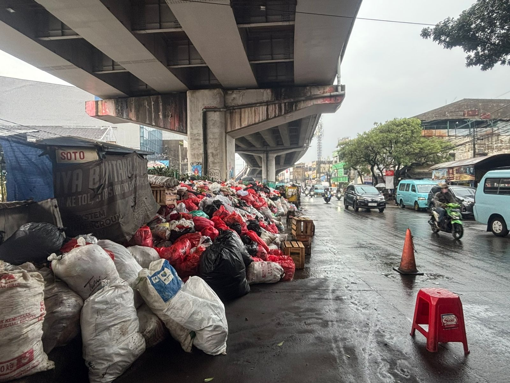

Indonesia · Circular Infrastructure
Waste Is A
Systems
Problem.
Scrapmint designs and operates the infrastructure that closes the loop — from collection to recovery. Built for Indonesia. Engineered for scale.

68M
Tonnes waste
yearly — ID
yearly — ID
14%
Formal recycling
rate, Indonesia
rate, Indonesia
3RD
Largest ocean
plastic polluter
plastic polluter
0
Scalable circular
systems in place
systems in place